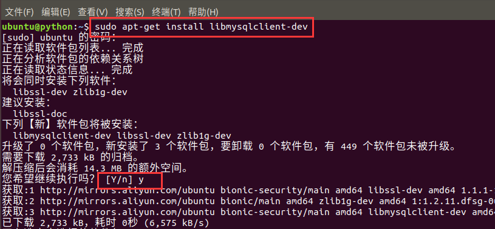

配置
在settings.py中保存了数据库的连接配置信息，Django默认初始配置使用sqlite数据库。
DATABASES = {
'default': {
'ENGINE': 'django.db.backends.sqlite3',
'NAME': os.path.join(BASE_DIR, 'db.sqlite3'),
}
}
1.在MySQL中创建数据库
create database book charset=utf8;
2.修改DATABASES配置信息
DATABASES = {
'default': {
'ENGINE': 'django.db.backends.mysql',
'HOST': '127.0.0.1', # 数据库主机
'PORT': 3306, # 数据库端口
'USER': 'root', # 数据库用户名
'PASSWORD': 'mysql', # 数据库用户密码
'NAME': 'book' # 数据库名字
}
}
3.运行测试

发现错误
- 虚拟环境中，没有安装MySQL数据库的客户端驱动
安装mysqlclient==1.4.6
# 进入虚拟环境
pip install mysqlclient==1.4.6 -i https://pypi.tuna.tsinghua.edu.cn/simple/
4.如果按照mysqlclient报错需要在当前操作系统中安装libmysqlclient-dev
sudo apt-get install libmysqlclient-dev
